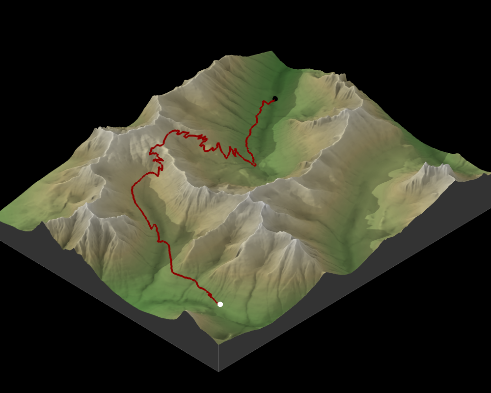
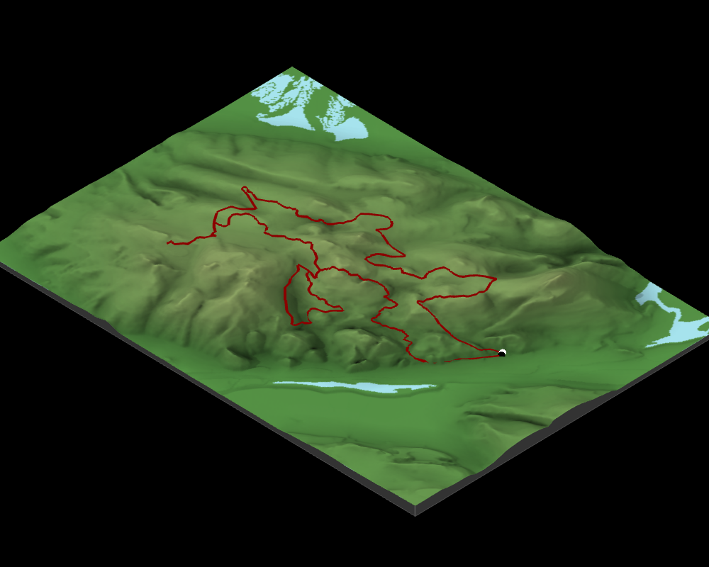

Time: 1:34.18 – (17th)
Distance: 10.5 Miles
Elevation Gain to Pass: 1,965

Time: 1:33.00 – (1st/9th) – 1st in brunch run; 9th
Overall
Distance: 10 Miles
Cumulative Gain: 1,800 feet
by Andy Krause
andy@andykrause.com